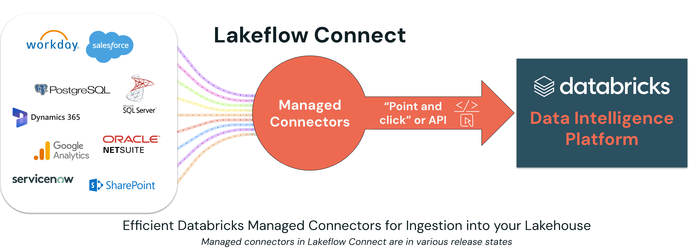
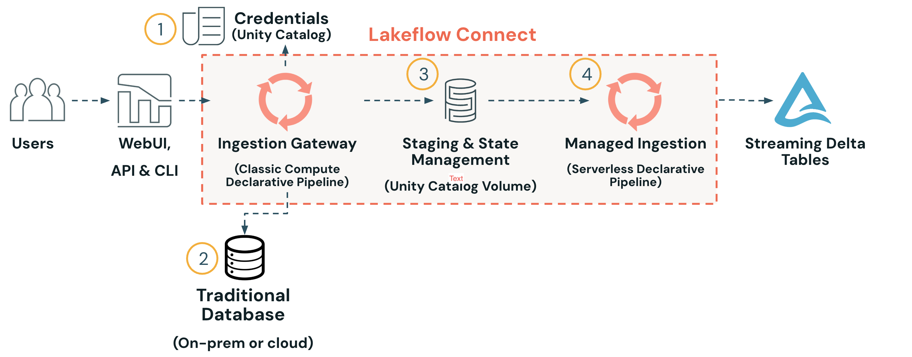

Section 2 · Data Ingestion and Loading · Quelle: Kurs 1, Kapitel 14–16
Cloud-Speicher-Dateien wie CSV, JSON oder Parquet sind nur ein Teil der Realität in Unternehmen: Ein großer Anteil der geschäftskritischen Daten liegt in Datenbanken (SQL Server, PostgreSQL, MySQL, …) oder in SaaS-Anwendungen (Salesforce, Workday, ServiceNow, SharePoint, …). Für diese Quellen wäre selbst geschriebener Ingestion-Code aufwändig zu pflegen – er müsste sich um Authentifizierung, inkrementelles Nachladen, API-Limits und Schema-Änderungen der Quelle selbst kümmern. Genau hier setzen die Managed Connectors von Lakeflow Connect an.
Managed Connectors sind fest in Databricks integrierte, von Databricks selbst betriebene Konnektoren für konkrete Enterprise-Datenquellen. Anders als die in den vorherigen Kapiteln behandelten Standard Connectors (die generisch auf Cloud-Speicher oder Kafka via read_files() zugreifen) sind Managed Connectors auf eine bestimmte Quelle spezialisiert – z. B. Salesforce, Workday, SQL Server, PostgreSQL, ServiceNow, SharePoint oder Google Analytics. Sie lassen sich per Point-and-Click-Oberfläche oder API einrichten und übernehmen Authentifizierung, inkrementelle Synchronisation und Skalierung vollständig verwaltet.

Intern unterscheidet Lakeflow Connect zwischen zwei Architektur-Mustern, je nachdem ob die Quelle öffentlich über eine API erreichbar ist (SaaS) oder in einem privaten Netzwerk liegt (Datenbank):
Bei SaaS-Anwendungen ist die Datenquelle über eine öffentlich erreichbare API oder einen OLAP-Endpunkt ansprechbar. Eine serverlose, deklarative Pipeline holt sich die Zugangsdaten aus Unity Catalog, ruft die API der Quelle auf und schreibt das Ergebnis direkt in eine Streaming-Delta-Tabelle. Sämtliche Datenbewegung findet dabei in der sogenannten Data Plane statt; die Control Plane von Databricks wird nur für Einrichtung und Monitoring genutzt.
Datenbanken liegen häufig hinter einer Firewall oder sind nicht öffentlich erreichbar – deshalb kommt hier ein zusätzlicher Baustein zum Einsatz: die Ingestion Gateway. Sie läuft als eigene Pipeline auf klassischem Compute (nicht serverlos) direkt im Netzwerk der Quelle, verbindet sich mit der Datenbank und extrahiert Metadaten, Snapshots und Change-Logs. Diese Zwischenergebnisse werden in einem Unity-Catalog-Volume zwischengespeichert, bevor eine zweite, serverlose Pipeline die Daten final in Streaming-Delta-Tabellen überführt.

Der Grund für diesen zweistufigen Aufbau ist vor allem Netzwerk- und Lastmanagement: Die Gateway kann innerhalb des privaten Netzwerks der Kundenumgebung betrieben werden (falls kein Private Link zur Verfügung steht), und sie bündelt die Verbindungslast zur Quelldatenbank, statt für jede nachgelagerte Pipeline eine eigene Direktverbindung aufzubauen. Bei SaaS-Quellen entfällt dieses Problem, da die Last dort typischerweise über API-Limits des Anbieters selbst geregelt wird.
Nicht für jede denkbare Quelle gibt es (noch) einen nativen Managed Connector. Für diesen Fall bietet Databricks Partner Connect an: Direkt aus der Databricks-Oberfläche lassen sich Testkonten bei ausgewählten Technologiepartnern (u. a. Fivetran, Informatica, Qlik, Rivery, Alteryx, Prophecy) anlegen und mit dem eigenen Workspace verbinden. Das ermöglicht es, Partnerlösungen mit den eigenen Daten im Lakehouse auszuprobieren, bevor man sich für eine dauerhafte Integration entscheidet. Databricks betont ausdrücklich, dass diese Partneroptionen auch dann bestehen bleiben, wenn später ein nativer Managed Connector für dieselbe Quelle verfügbar wird – es geht um Wahlfreiheit, nicht um Ablösung.
Über die eigentliche Ingestion hinaus bietet Databricks noch weitere Bausteine für Datenintegration und -austausch, die in diesem Kurs nur gestreift werden: